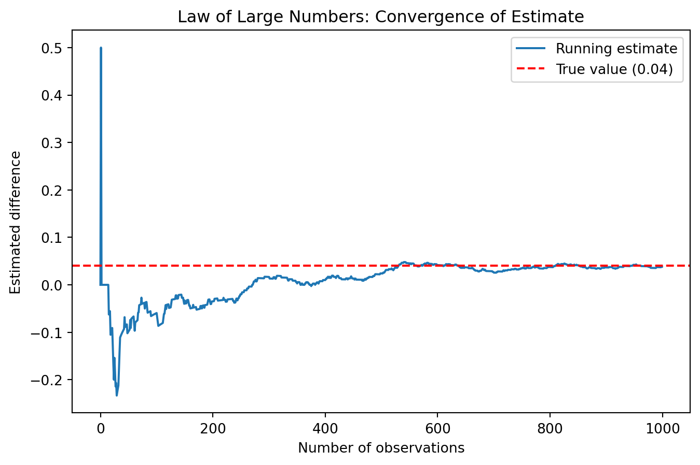
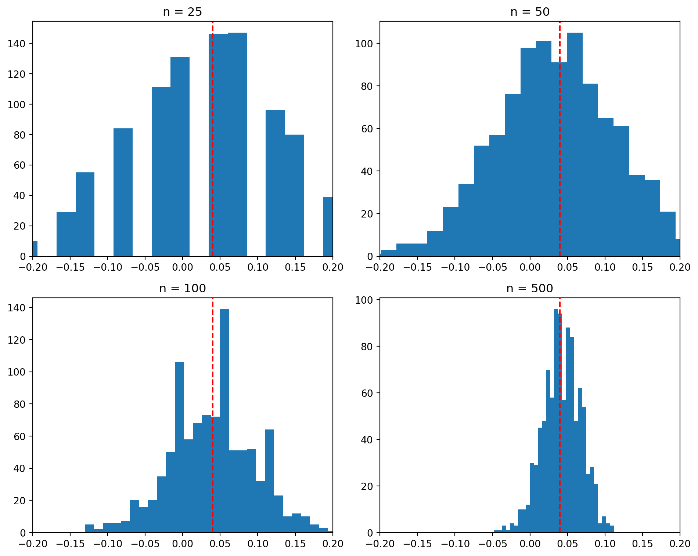

A/B Testing a Call to Action
Simulating Key Ideas from Classical Frequentist Statistics
Introduction
I have a website where visitors can sign up to receive a newsletter. The landing page includes a call-to-action (CTA) that encourages users to subscribe.
I want to understand which of two different CTAs leads to more sign-ups. CTA A reads “Sign up for our newsletter here!”, while CTA B reads “Stay up to date by signing up!”. Although they aim to achieve the same goal, the wording may influence user behavior.
To compare their effectiveness, I run an A/B test. In this experiment, visitors are randomly assigned to see one of the two CTAs. By comparing the sign-up rates between the two groups, I can determine which version performs better.
The A/B Test as a Statistical Problem
Each visitor either signs up or does not, so we can model each visitor’s outcome as a draw from a Bernoulli distribution with parameter \(\pi\), which represents the probability of signing up.
Because the CTA a visitor sees may influence their behavior, we allow this probability to differ across groups. Visitors who see CTA A have a sign-up probability \(\pi_A\), while those who see CTA B have a probability \(\pi_B\). Each visitor’s outcome is therefore either 1 (sign-up) or 0 (no sign-up).
The quantity we care about is \(\theta = \pi_A - \pi_B\), which represents the difference in sign-up rates between the two CTAs.
To estimate this difference, we use the difference in sample means: \(\hat\theta = \bar{X}_A - \bar{X}_B\).
Since each observation is either 0 or 1, the sample mean is simply the proportion of visitors who signed up. This means \(\bar{X}_A = \hat\pi_A\) and \(\bar{X}_B = \hat\pi_B\).
Simulating Data
In a real-world A/B test, we would not know the true values of \(\pi_A\) and \(\pi_B\). However, for this exercise, we set them ourselves so that we can evaluate how well our estimator performs when the true value is known.
Suppose \(\pi_A = 0.22\) and \(\pi_B = 0.18\), so the true difference in sign-up rates is \(\theta = 0.04\).
To simulate this scenario, we generate 1,000 observations for each group using Bernoulli distributions. Each observation represents whether a visitor signs up (1) or not (0). These simulated datasets will be used in the following sections to analyze the behavior of our estimator.
The Law of Large Numbers
The Law of Large Numbers states that as the sample size increases, the sample mean converges to the true population mean. In this context, it means that our estimator \(\hat\theta = \bar{X}_A - \bar{X}_B\) will become closer to the true difference \(\theta\) as we collect more data.
To demonstrate this, we compute the difference between the CTA A and CTA B outcomes for each observation, and then calculate the cumulative average of these differences as the sample size increases.
The plot shows that when the number of observations is small, the estimate is very unstable and fluctuates significantly. This is because each new observation has a large impact on the average.
As more data is included, the estimate becomes smoother and stabilizes. Eventually, it converges toward the true value of 0.04.
This demonstrates the Law of Large Numbers: with a larger sample size, our estimate becomes more reliable and closer to the true difference.
Bootstrap Standard Errors
Now that we have an estimate of \(\theta\), the next question is how precise that estimate is. A point estimate tells us the most likely difference in sign-up rates, but it does not tell us how much uncertainty remains.
One useful way to measure that uncertainty is the bootstrap. The bootstrap is a resampling method: we repeatedly sample with replacement from the observed data, recompute the statistic each time, and then use the variation across those resampled estimates to approximate the standard error.
Estimated difference (theta_hat): 0.0380
Bootstrap standard error: 0.0175
Analytical standard error: 0.0178
95% CI using bootstrap SE: (0.0036, 0.0724)The bootstrap standard error (0.0175) is very close to the analytical standard error (0.0178), which suggests that the resampling method provides a reliable estimate of uncertainty.
Using the bootstrap standard error, we construct a 95% confidence interval for \(\theta\) of (0.0036, 0.0724). This interval represents a range of plausible values for the true difference in sign-up rates between CTA A and CTA B.
Because the entire interval is above 0, this suggests that CTA A likely performs better than CTA B in this simulated example. In other words, there is evidence that the difference in sign-up rates is positive, not just due to random variation.
The Central Limit Theorem
The Central Limit Theorem states that regardless of the shape of the underlying population distribution, the sampling distribution of the sample mean becomes approximately Normal as the sample size increases. In this case, it means that the distribution of \(\hat\theta = \bar{X}_A - \bar{X}_B\) will become more bell-shaped as the sample size grows.
To demonstrate this, we simulate the sampling distribution of \(\hat\theta\) for different sample sizes: \(n \in \{25, 50, 100, 500\}\).

The histograms show how the distribution of \(\hat\theta\) changes as the sample size increases.
When the sample size is small (e.g., \(n = 25\)), the distribution is irregular and somewhat noisy. The values are spread out and not clearly symmetric.
As the sample size increases (e.g., \(n = 50\) and \(n = 100\)), the distribution becomes smoother and more centered around the true value. The shape starts to look more balanced.
By the time we reach a large sample size (e.g., \(n = 500\)), the distribution is clearly bell-shaped and tightly concentrated around the true value of 0.04.
This demonstrates the Central Limit Theorem: even though the underlying data are Bernoulli, the sampling distribution of the estimator becomes approximately Normal as the sample size grows.
Hypothesis Testing
Now that we have seen the Central Limit Theorem in action — that the sampling distribution of \(\hat\theta\) is approximately Normal for large samples — we can use this result to perform a formal hypothesis test.
A hypothesis test is a way to determine whether the observed difference in sign-up rates is statistically significant or could have occurred by chance. We begin by defining our hypotheses. The null hypothesis is \(H_0: \theta = 0\), meaning that the two CTAs produce the same sign-up rate. The alternative hypothesis is \(H_1: \theta \neq 0\), meaning that there is a difference between the two CTAs. The goal is to assess whether the data provide enough evidence to reject \(H_0\).
To carry out the test, we standardize our estimator \(\hat\theta\) to form a test statistic:
\[ z = \frac{\hat\theta - 0}{SE(\hat\theta)} \]
This standardization step can be understood in three parts. First, by the Central Limit Theorem, we know that \(\hat\theta\) is approximately Normally distributed when the sample size is large. Under the null hypothesis, the mean of this distribution is 0.
Second, when we divide a Normally distributed variable by its standard deviation, we obtain a standard Normal distribution \(N(0,1)\). Therefore, under \(H_0\), the test statistic \(z\) follows an approximate standard Normal distribution.
Third, knowing the distribution of \(z\) allows us to compute a p-value, which measures how extreme our observed result is under the assumption that the null hypothesis is true.
Although this procedure is often referred to as a “t-test”, it is more accurate to think of it as a z-test in this setting. The classical t-test applies when the data are Normally distributed and the variance must be estimated, leading to an exact t-distribution. In our case, the data are Bernoulli, not Normal, so there is no exact t-distribution result. Instead, the Central Limit Theorem provides approximate Normality. Since we estimate the standard error from the data, our test is conceptually closer to a z-test. In practice, for large samples, the t-distribution and the standard Normal distribution are very similar, so the difference is not important for our conclusions.
z-statistic: 2.1388
p-value: 0.0325The test statistic is 2.1388, which means our estimate is about 2.14 standard errors away from 0. The corresponding p-value is 0.0325.
Since the p-value is less than the common significance level of 0.05, we reject the null hypothesis \(H_0: \theta = 0\). This suggests that the difference in sign-up rates between the two CTAs is statistically significant.
In this simulated example, the result provides evidence that CTA A performs better than CTA B. The observed difference is unlikely to be due to random chance alone.
The T-Test as a Regression
It turns out that the two-sample test we just ran is mathematically equivalent to a simple linear regression. This connection is useful because it shows that the same regression tools used in many other settings can also be used to analyze A/B tests, and the framework extends naturally to more complex experiments.
To set this up, we combine the CTA A and CTA B data into one dataset with two variables. The outcome variable is \(Y_i\), which equals 1 if the visitor signs up and 0 otherwise. The second variable is an indicator \(D_i\), which equals 1 if the visitor saw CTA A and 0 if the visitor saw CTA B. We then fit the regression
\[ Y_i = \beta_0 + \beta_1 D_i + \varepsilon_i \]
This regression has a very direct interpretation. First, \(\beta_0\) is the expected value of \(Y_i\) when \(D_i = 0\). Since \(D_i = 0\) corresponds to CTA B, \(\beta_0\) is simply the mean sign-up rate in group B, which estimates \(\pi_B\).
Second, when \(D_i = 1\), the regression becomes \(\beta_0 + \beta_1\). This is the expected value of \(Y_i\) for visitors who saw CTA A, so it represents the mean sign-up rate in group A, which estimates \(\pi_A\).
Third, if \(\beta_0\) gives the mean of group B and \(\beta_0 + \beta_1\) gives the mean of group A, then \(\beta_1\) must be the difference between the two group means. That means
\[ \beta_1 = \pi_A - \pi_B = \theta \]
and the OLS estimate \(\hat\beta_1\) is numerically identical to the difference in sample means \(\hat\theta = \bar{X}_A - \bar{X}_B\).
beta_1 estimate: 0.0380
standard error: 0.0178
t-statistic: 2.1377
p-value: 0.0327
theta_hat: 0.0380The regression coefficient \(\hat\beta_1\) is 0.0380, which exactly matches \(\hat\theta = 0.0380\). This confirms that the regression approach produces the same estimate as the difference in sample means.
The standard error (0.0178), t-statistic (2.1377), and p-value (0.0327) are also nearly identical to the values obtained in the previous hypothesis testing section. This shows that both approaches lead to the same statistical conclusion. Any small differences come from how the standard error is computed: the two-sample formula allows separate variances for each group, while OLS uses a pooled variance estimate.
This equivalence is important because it shows that regression provides a flexible and powerful framework for analyzing experiments. In simple cases like this, it gives the same result as a two-sample test. In more complex settings, it allows us to include additional variables, interactions, or multiple treatment groups, while maintaining the same interpretation of the results.
The Problem with Peeking
In practice, it can be tempting to check results before an experiment is complete. Suppose we run our A/B test and instead of waiting for all 1,000 observations per group, we check the results every 100 observations. If any of those intermediate tests is significant at the \(\alpha = 0.05\) level, we stop early and declare a winner.
This approach is problematic under classical frequentist statistics. A single hypothesis test at the 5% significance level has a 5% chance of producing a false positive (rejecting \(H_0\) when it is actually true). However, when we repeatedly test the data as it accumulates, each check creates another opportunity for a false positive. As a result, the overall probability of making at least one false rejection becomes much higher than 5%.
To demonstrate this, we simulate a setting where the null hypothesis is true. We set \(\pi_A = \pi_B = 0.20\), meaning there is no real difference between the two CTAs.
False positive rate with peeking: 0.1864The simulation shows that the false positive rate with peeking is approximately 0.1864, or 18.64%. This is much higher than the nominal 5% false positive rate of a single hypothesis test.
This means that when we repeatedly check the data during the experiment, the chance of incorrectly rejecting the null hypothesis increases significantly. In other words, we are much more likely to conclude that one CTA is better when in reality there is no true difference.
This demonstrates that peeking inflates the Type I error rate and leads to unreliable conclusions. In practice, this means that stopping an experiment early based on intermediate results can produce misleading outcomes and should be avoided unless proper statistical adjustments are used.